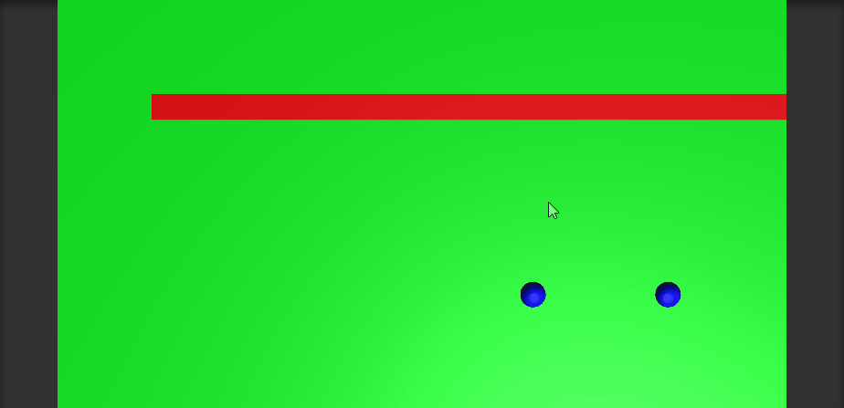
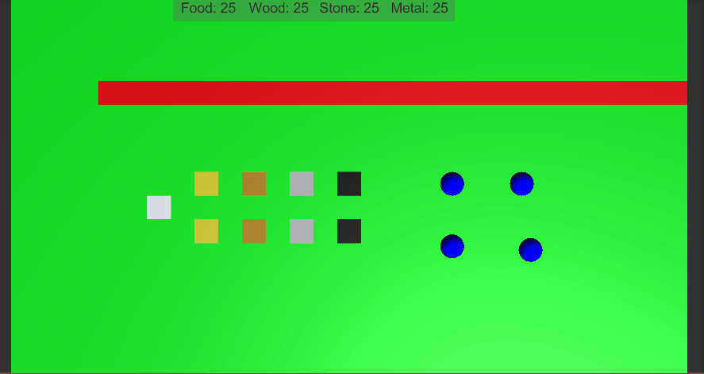
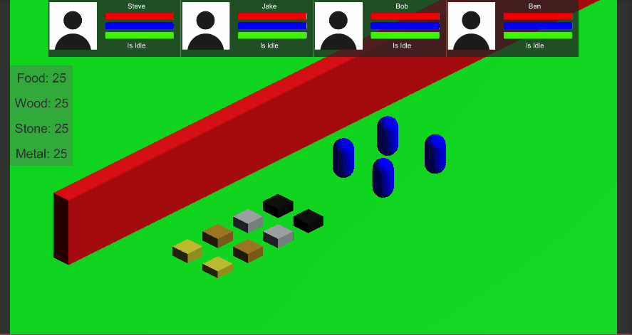
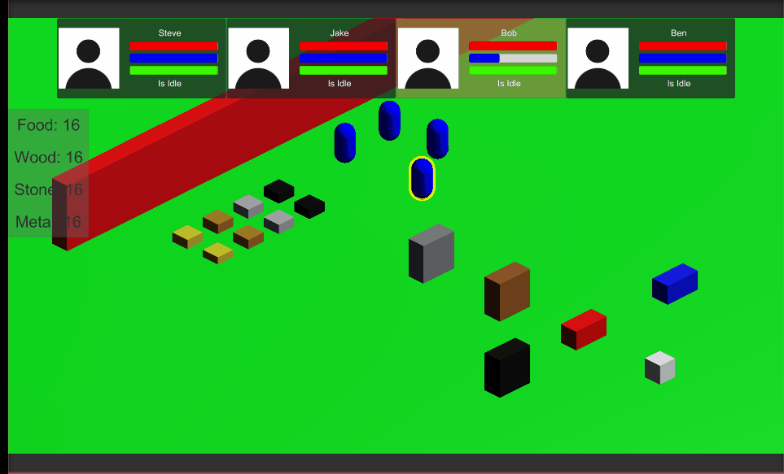
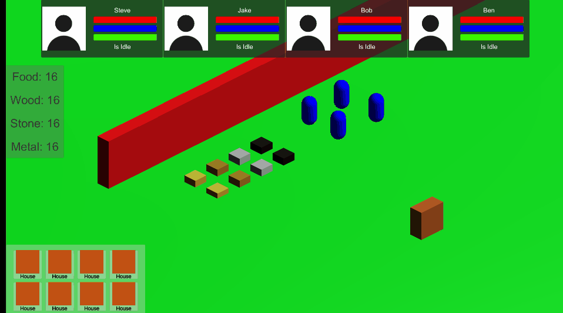
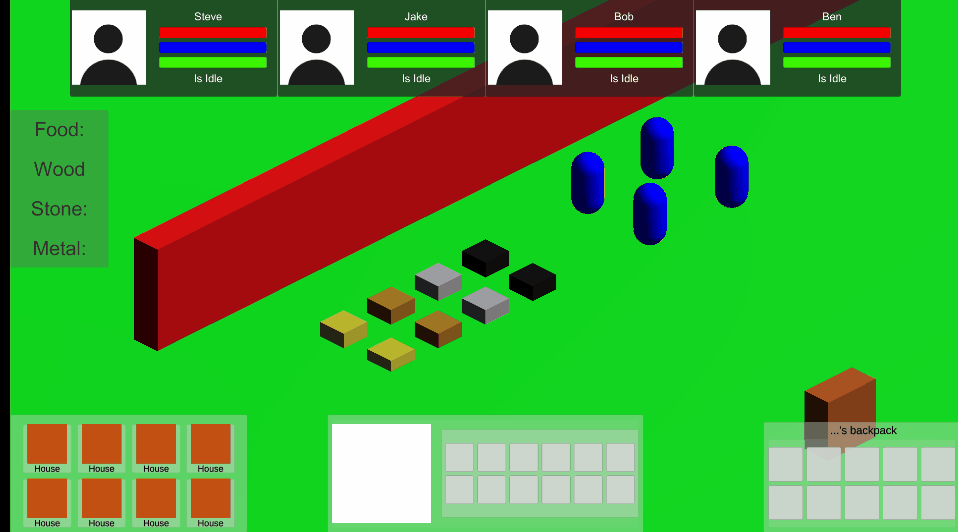

Wróć (ze strony głównej nie dostaniesz się tu z powrotem. Przynajmniej nie przyciskiem :D)
Jest to gra aktualnie przeze mnie tworzona wraz ze znajomymi z SoftwarePartner.
Kod jest niedostępny, ponieważ zamierzamy ją wydać, ale można pokazać gify (bardzo) wczesnej wersjii.
Przedstawiają one podstawowe mechaniki, które (prawdopodobnie :D ) znajdą się w grze.
Gify





